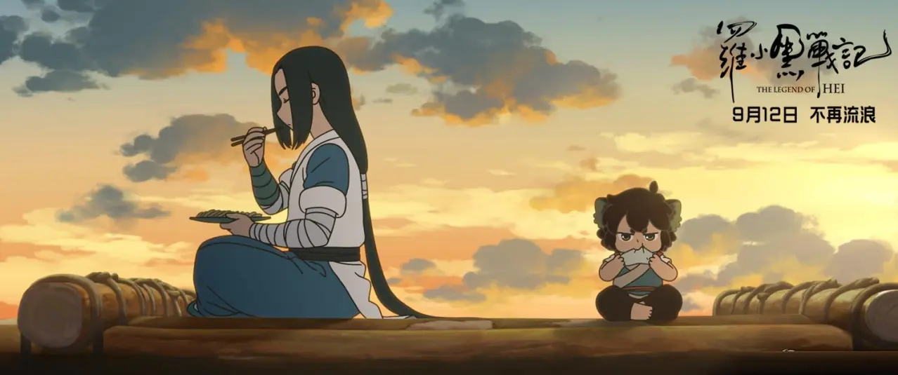
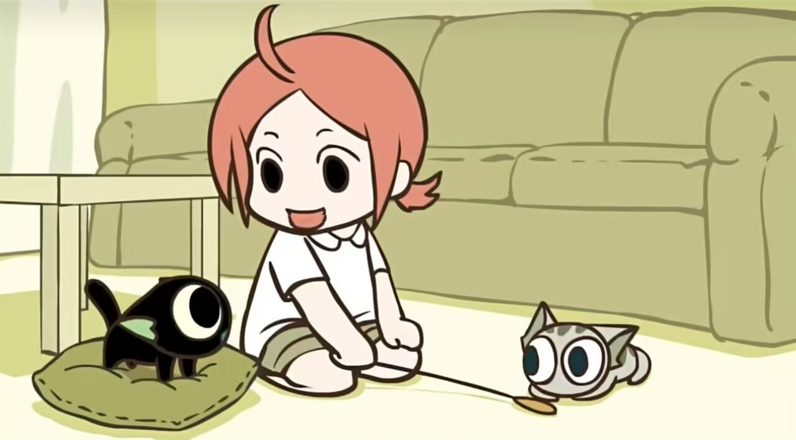
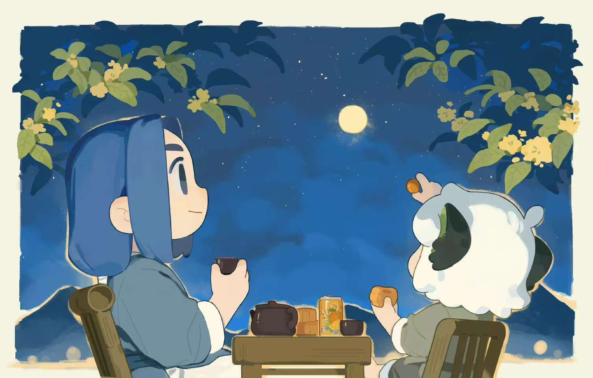
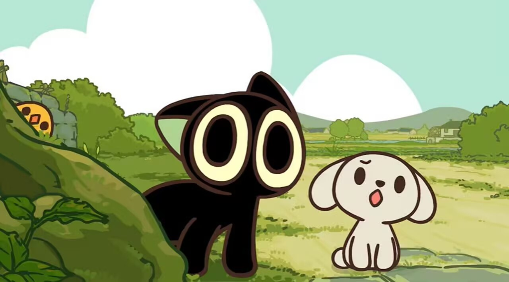
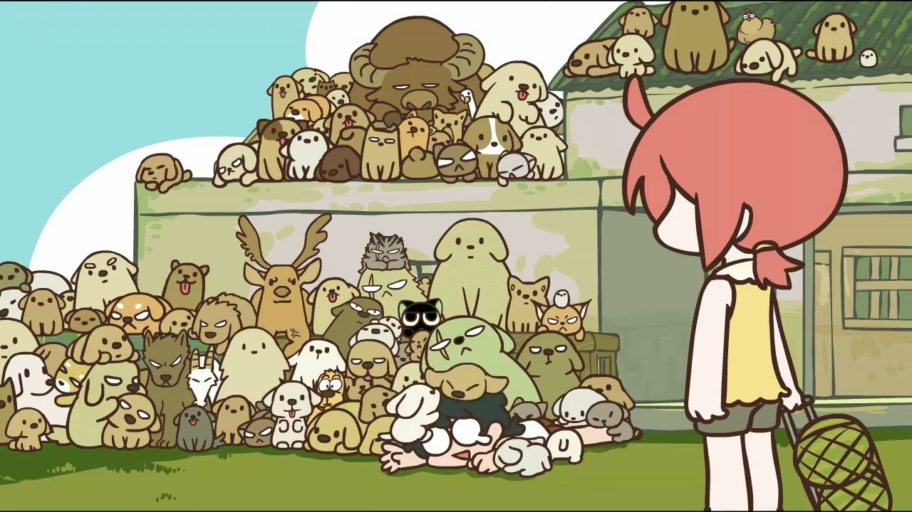

剧情简介
《罗小黑战记》是由MTJJ执导并编剧，北斗企鹅工作室倾力打造，山新、皇贞季、郝祥海、刘明月担任主要配音的中国动画电影。
这部中国的2D动画电影作为同名TV动画的前传，展现了猫妖罗小黑在执行者无限的引领下，逐步成长的过程。
在熙攘的人类世界里，很多妖精隐匿其中，他们与人类相安无事地生活着。猫妖罗小黑因为家园被破坏，开始了它的流浪之旅。这场旅途中惺惺相惜的妖精同类与和谐包容的人类伙伴相继出现，让小黑陷入了两难抉择，究竟何处才是真正的归属。
主线围绕着罗小黑如何适应新的生活方式，以及它与人类和其它妖怪之间的关系展开。同时，剧中还探讨了关于环境保护、人与自然和谐共存等深层次的主题。此外，《罗小黑战记》电影版则进一步扩展了这一世界观，讲述了更多关于罗小黑背景以及它所属的世界的秘密。
- 
- 
- 
- 
- 
角色介绍
罗小黑 : 一只黑色猫妖，因为家园被人类所破坏，开始了它的流浪之旅。天赋异禀，拥有控制“领域”巨大力量。在这期间，无限将其抓获，为了回到陆地，与功力高深的无限开始了一段短途旅行。
无限 : 妖灵会馆的最强执行者，人类最强者。无意中抓住小黑，为了回到陆地，与充满敌意的罗小黑开始了一段短途旅行.
风息 : 木属性妖怪，对人类抱有成见，想利用小黑的能力从而拉拢小黑，为了创造没有人类的世界，选择牺牲小黑。
哪吒 : 御灵系-火、生灵系-幻化 锁御系-灵御，三系大佬，性格较为急躁。
影片评价
影片在豆瓣的评分为8.0/10，许多观众认为它探讨了人类与妖怪的共存与对立，值得观看。
获奖记录
入围第33届中国电影金鸡奖最佳美术片提名。
音乐原声
《不再流浪》 - 周深
《走过世界每个角落》 - 周笔畅
该片自2019年9月7日在中国内地上映以来，至2021年11月已累计斩获3.15亿元票房。
2020年11月7日，该片获第33届中国电影金鸡奖最佳美术片提名 。